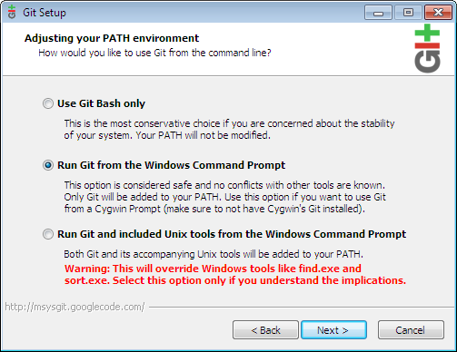

|
Such a workstation typically includes:
To create such a workstation, this article explains how to:
Note: If you are using Hosted Chef with Windows 2008 R2 you can use the Fast Start Guide for Windows for directions on setting up your node as a workstation and a client. This guide also contains a quick walkthrough on using recipes on the client. |
|

Install ChefDownload the Chef Full Installer for Windows and open it. Choose defaults for any options. Once it is installed there will be no icon for it. If needed, you can confirm it was installed correctly with these commands in a new command prompt window: C:\> tar --version bsdtar 2.8.3 - libarchive 2.8.3 C:\> chef-client --version You should see "Chef: 10.12.0" returned as the version number. Install Git (optional)Git is used to download cookbooks, and the Chef Repository easily. You can skip this step and you will still be able to bootstrap nodes, and add recipes and roles to run_lists. If you skip this step and want to work on your cookbooks, you will need to manually download the cookbook you need from the Community site instead of using knife. Download the Git Full installer for Windows and install it. To make Git easily accessible from normal Windows Command Prompts, be sure to choose the 'Run Git from the Windows Command Prompt' option.  For the line ending conversions option be sure to choose: 'Checkout as-is, commit Unix-style line endings'. Your fellow developers on *nix platforms will thank you!
Once Git has installed, close any command line windows and re-open them so the git command can be used. Note Don’t worry if you don’t see an icon when it’s done. It’s not that kind of application. For more in depth Git information please refer to the help guide on github.com. Create a Chef Repository on your workstationThe following directions will create a Chef repository--a folder on your local workstation from which you can manage your infrastructure. Advanced users may find is productive to deviate from the basic setup outlined in these directions. Copy the skeleton Chef Repository available on GithubUsing GitUsing git, we can create a chef repository by cloning a skeleton repository provided by Opscode: C:\Users> cd "%HOMEPATH%" C:\Users\USERNAME> git clone git://github.com/opscode/chef-repo.git This command will create a folder named chef-repo in your home directory. You can clone the repository to a different directory using a command such as: C:\> git clone git://github.com/opscode/chef-repo.git C:\path\to\alternate\directory If you choose to use an alternate directory, you'll need to change this in the commands below. Without GitIf you skipped installing Git, you can copy the skeleton repository by going onto github.com. 1. Browse to https://github.com/opscode/chef-repo
After this has been completed, you should be able to browse to the %HOMEPATH%\chef-repo\cookbooks directory. Create a Configuration FolderFirst we will need to create the .chef file where the pem keys and knife.rb are stored. You must use the mkdir command below to do this, as creating the file any other way will not allow you to name it '.chef': C:\> mkdir "%HOMEPATH%\chef-repo\.chef" Now, we need to copy the necessary keys and knife configuration into this directory. The rest of this step will be a bit different depending on the platform you are using:
Confirm your configuration is workingTo confirm that your configuration is working, attempt to run a simple knife command C:\> cd "%HOMEPATH%\chef-repo"
C:\Users\USERNAME\chef-repo> knife client list
ORGANIZATION-validator
NOTE: knife commands will only work in the %HOMEPATH%\chef-repo directory unless you add -c "%HOMEPATH%\chef-repo\.chef\knife.rb" to the end of the command to specify where the knife config is located. This command would work from any directory: C:\> knife client list -c "%HOMEPATH%\chef-repo\.chef\knife.rb" Install a CookbookFirst you'll need to configure git, replacing USER@EMAIL.com with your email address: C:\> git config --global user.email "USER@EMAIL.com" Once this is configured you can install the cookbook: C:\> cd %HOMEPATH%\chef-repo C:\Users\username\chef-repo> knife cookbook site install getting-started Installing getting-started to C:/Users/username/chef-repo/cookbooks Checking out the master branch. Pristine copy branch (chef-vendor-getting-started) exists, switching to it. ... output truncated ... Cookbook getting-started version 0.4.0 successfully installed This will create the file chef-repo\cookbooks\getting-started in your user's home directory, you can see the default recipe contained in this cookbook at chef-repo\cookbooks\getting-started\recipes\default.rb. Upload a CookbookYou can then upload the cookbook to the Chef Server/Hosted Chef with this command. This will make the recipe available to be added to a run_list for a node: C:\> cd "%HOMEPATH%\chef-repo" C:\Users\USERNAME\chef-repo> knife cookbook upload getting-started If you get an error where it cannot find the cookbook in your path, you can specify where they are located with the -o switch: C:\> knife cookbook upload getting-started -o "%HOMEPATH%\chef-repo\cookbooks" If you edit the knife.rb with the cookbook_path instructions above and relaunch a cmd window you should no longer need to use the -o switch. Configure this workstation as a clientIf you decide that you would also like to run chef-client on this node, you can follow the directions on Step 5 of the Fast Start Guide for Windows to configure chef-client. Knife pluginsThe knife windows plugin can be used to bootstrap new Windows nodes as clients. The plugin can also be used from Mac or Linux workstations. You can install it with Rubygems by using this command: C:\> gem install knife-windows There are also plugins for managing EC2 or Rackspace nodes. For a more complete list see Community Plugins. Some Resources/Providers Are Known To Not WorkNot all Resources work on windows yet. The Following Resources do not work in windows:
|

|
|


{kind=link}
{kind=link}
{kind=link}
{kind=link}
{kind=link}
{kind=link}